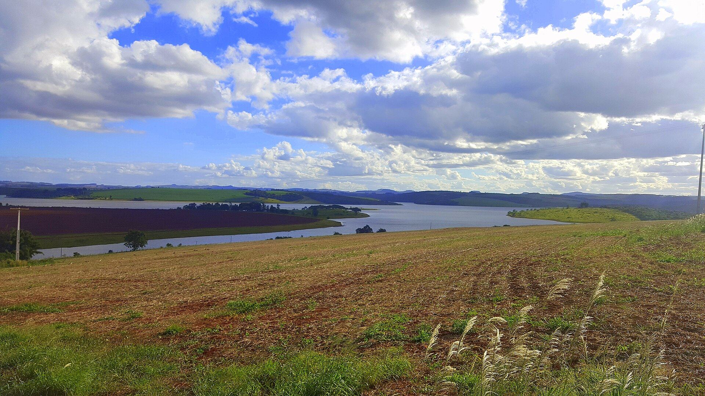

Avaré · São Paulo
A maior cidade da região, às margens de Jurumirim — financiando um SAMU que não controla.
Avaré é o maior município e a maior demanda da região, mas opera com uma única ambulância em condições de rodar e divide a UTI móvel regional com outros 16 municípios. O custo que aparece no papel não é o custo inteiro — manutenção, combustível, imóvel e coordenação estão espalhados por outras áreas do orçamento. Este estudo separa o que é fato do que é premissa e apresenta uma proposta única para o município ter o seu próprio SAMU.
Avaré declara gastar R$ 491.417,77 por mês — cerca de R$ 5,9 milhões por ano — com o SAMU. Mas esse número é parcial: manutenção da frota, combustível, imóvel e coordenação estão espalhados por outras rubricas do orçamento. O resultado é uma operação que parece barata no papel e insuficiente na rua.
Avaré tem 96.450 habitantes e a maior demanda de urgência da AMVAPA, mas opera com uma única USB em condições de rodar e divide USA e Central regionais com mais 16 municípios.
O custo declarado de R$ 491 mil/mês não inclui manutenção da frota, combustível, despesas do imóvel nem a coordenação cedida. O gasto real é maior e está fragmentado entre pastas.
Um operador único e dedicado: duas ambulâncias na rua mais uma de reserva, UTI móvel própria funcionando dia e noite e equipe completa contratada — tudo em um único contrato com custo aberto.
A frota declarada tem três Unidades de Suporte Básico, mas só uma está em condições de rodar. A USA é única e regional, dividida entre os 17 municípios. O custo aparece menor do que é porque a operação está fragmentada em várias pastas do orçamento.
| Unidade | Ano / modelo | Situação |
|---|---|---|
| USB 01 | 2012 · Peugeot Boxer | Parada |
| USB 02 | 2015 · Renault Master | Parada |
| USB 03 | 2024 · Renault Master | Operante |
| USA regional | Suporte avançado | Única para os 17 municípios |
| Regime de escala | 12×36 | Combustível 349,8 litros/mês |
Das três USB declaradas, apenas a Renault Master 2024 está operante. As de 2012 e 2015 estão paradas. Quando a única viatura está empenhada, Avaré fica sem cobertura própria de suporte básico.
A base reúne condutores socorristas, técnicos de enfermagem, enfermeiro, auxiliares de serviços gerais, técnica auxiliar de RM e um coordenador cedido — em escala 12×36.
A USB de Avaré realiza em média 152 atendimentos por mês (faixa 131–168). No período de referência, o perfil foi de maioria clínica, seguido de trauma, psiquiátrico e obstétrico.
| Equipe da base | Quantidade | Observação |
|---|---|---|
| Condutores socorristas | 6 | Escala 12×36 |
| Técnicos de enfermagem | 5 | Assistência direta |
| Enfermeiro | 1 | Carga de 30h |
| Auxiliares de serviços gerais | 2 | Apoio |
| Técnica auxiliar de RM | 1 | Apoio administrativo |
| Coordenador de base | 1 | Servidor cedido |
| Total na base | 16 | Obstétricas no período: 38 |
A fragilidade da operação atual aparece onde mais importa: na hora de chegar ao paciente grave. Frota insuficiente, suporte avançado único e falhas de regulação se somam — com um óbito já documentado pela própria Secretaria de Saúde.
Com uma única viatura operante e sem reserva, quando a USB de Avaré é empenhada o município fica sem cobertura própria de suporte básico até que ela se libere.
Um só suporte avançado para 17 municípios e 312 mil habitantes. Cada acionamento grave depende da disponibilidade dessa única unidade — impacto direto no tempo-resposta.
Casos graves sem liberação de viatura, com óbito documentado pela própria SMS. A não-liberação em situações críticas é a expressão mais grave da fragilidade do modelo atual.
| Custo oculto | Onde está hoje | Efeito |
|---|---|---|
| Manutenção da frota | Diluída na "frota geral" do município | Não aparece no custo do SAMU |
| Combustível | Garagem da Prefeitura | Consumo do SAMU não isolado |
| Imóvel | Água, luz, IPTU e manutenção | Despesa fixa fora da rubrica |
| Coordenação | Servidor cedido | Custo de pessoal em outra pasta |
| Passivo trabalhista | TAC firmado com o MPT | Risco e exposição não precificados |

Uma proposta única: a Samais assume a operação completa do SAMU do município — duas ambulâncias na rua mais uma de reserva, UTI móvel própria dia e noite, equipe completa contratada e despacho inteligente. A central regional de chamados, que já fica em Avaré e funciona bem no papel dela, continua regulando — o que muda é que Avaré passa a ter frota, equipe e comando próprios.
Condutores, técnicos de enfermagem, enfermeiros e médicos da UTI móvel contratados, treinados e fixados — com a escala 24 horas coberta de verdade, sem a viatura parar no descanso da equipe.
Duas ambulâncias ativas mais uma de reserva: quando uma estiver ocupada ou em manutenção, a cidade não fica descoberta. As viaturas paradas são avaliadas e reativadas — sem compra de frota nova.
Cada chamado e cada viatura rastreados em tempo real, com painel aberto para a Secretaria — atacando de frente as falhas de despacho que hoje custam tempo e, já documentado, custaram uma vida.
O valor abaixo é o total — sem rubricas escondidas e sem custos espalhados por outras pastas. A verba federal que o serviço já recebe abate a conta do município. Os números são de referência e serão calibrados com os dados finais na diligência.
| Proposta única — operação dedicada | Referência |
|---|---|
| População atendida | 96.450 hab |
| Frota em operação | 2 ambulâncias + 1 reserva + 1 UTI móvel 24h |
| Equipe | ~43 profissionais CLT |
| Valor da proposta (mensal) | R$ 1,24 mi |
| Valor da proposta (anual) | R$ 14,9 mi |
| (−) verba federal já existente | − R$ 159,6 mil/mês |
| Custo líquido para Avaré | ~R$ 1,08 mi/mês |
| Comparação honesta | Hoje | Com a proposta |
|---|---|---|
| Ambulâncias em condições de rodar | 1 (sem reserva) | 2 + 1 reserva |
| UTI móvel para Avaré | 1 dividida com 16 cidades | 1 própria, 24h |
| Cobertura no descanso da equipe | viatura para | coberta |
| Custo visível | R$ 491 mil (parcial) | R$ 1,24 mi (completo) |
| Custos fora da conta | manutenção · combustível · imóvel · coordenação | zero — tudo dentro |
A diferença está em entregar a operação funcionando, com custo aberto e conformidade plena — não um relatório. Cada diferencial responde a um ponto crítico da operação atual de Avaré.
A Samais opera o serviço, não vende consultoria. O custo é aberto linha a linha, sem rubricas escondidas — o gestor enxerga cada item do que paga.
Regulação, despacho e telemetria em plataforma própria, com rastreabilidade em tempo real — atacando diretamente as falhas de regulação que hoje custam vidas.
Equipe CLT no piso, com fim dos passivos trabalhistas, e Núcleo de Educação Permanente estruturado (NR-32, SAVC). Autonomia municipal sobre o próprio serviço.
Reunião técnica para dimensionar a operação ao dado real de Avaré — frota, equipe e demanda.
Validação dos custos ocultos — manutenção, combustível, imóvel e coordenação — isolando o gasto real do SAMU.
Definição do modelo de contratação — Lei 14.133/2021 ou chamamento público — conforme a escolha do município.
Consolidação de documentos: portarias, produção de 12 meses, folha, contrato AMVAPA, repasses e CCT.
| Interlocução · portas de entrada | Referência | Status |
|---|---|---|
| SMS · Planejamento Estratégico | Rodrigo Silvestre — respondeu o levantamento oficial (21/05/2026) | ✓ |
| Secretaria Municipal de Saúde | Titular da pasta — reconfirmar por telefone | ⚠ |
| Prefeitura de Avaré | Prefeito(a) — decisão final da municipalização | ⚠ |
Avaré financia um SAMU regional e fica com um terço dele. É hora de ter o seu.
Transparência metodológica: separamos o dado público e oficial verificável da estimativa de modelagem, a confirmar em diligência.
Duas ambulâncias na rua mais reserva, UTI móvel própria dia e noite, equipe completa e um único contrato com o custo todo aberto — calibrado ao dado real do município em diligência de campo.